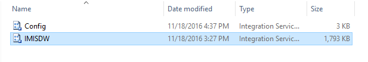
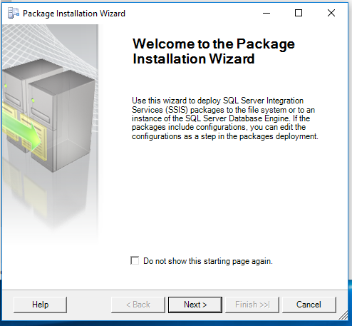
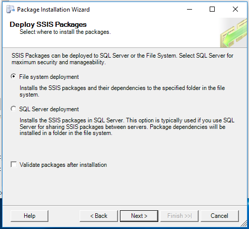
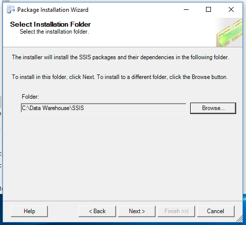
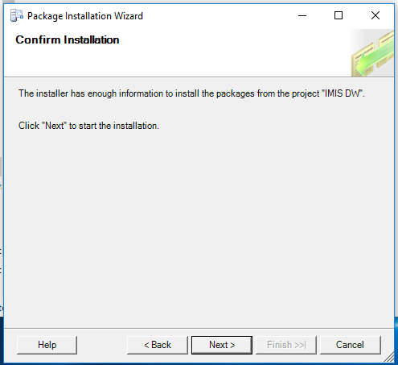
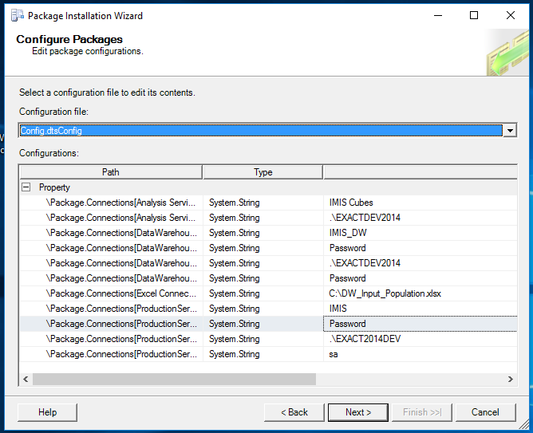
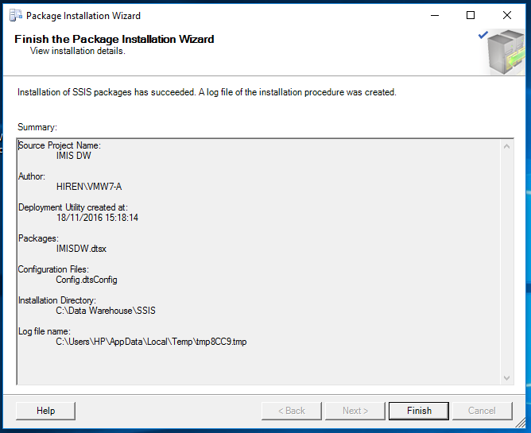

Deploy SSIS¶
Once the IIS configuration has successfully completed, go to the SSIS deployment folder. Double click the IMISDW file(Image - SSIS deployment folder).
Image - SSIS deployment folder
On the package installation wizard click next to continue with SSIS installation(Image - SSIS deployment wizard, Start).
Image - SSIS deployment wizard, Start
On the installation wizard, select the file system deployment and click next to continue the installation(Image - SSIS deployment wizard, Install location).
Image - SSIS deployment wizard, Install location
Browse the destination folder to install the package. Click next to continue with the installation(Image - SSIS deployment wizard, Destination folder).
Image - SSIS deployment wizard, Destination folder
Click next to allow the installation wizard to install the SSIS packages(Image - SSIS deployment wizard, Launch installation).
Image - SSIS deployment wizard, Launch installation
Modify the credential details as required. Click next to continue with the installation(Image - SSIS deployment wizard, Change password).
Image - SSIS deployment wizard, Change password
Click finish to complete the installation(Image - SSIS deployment wizard, Finish installation).
Image - SSIS deployment wizard, Finish installation